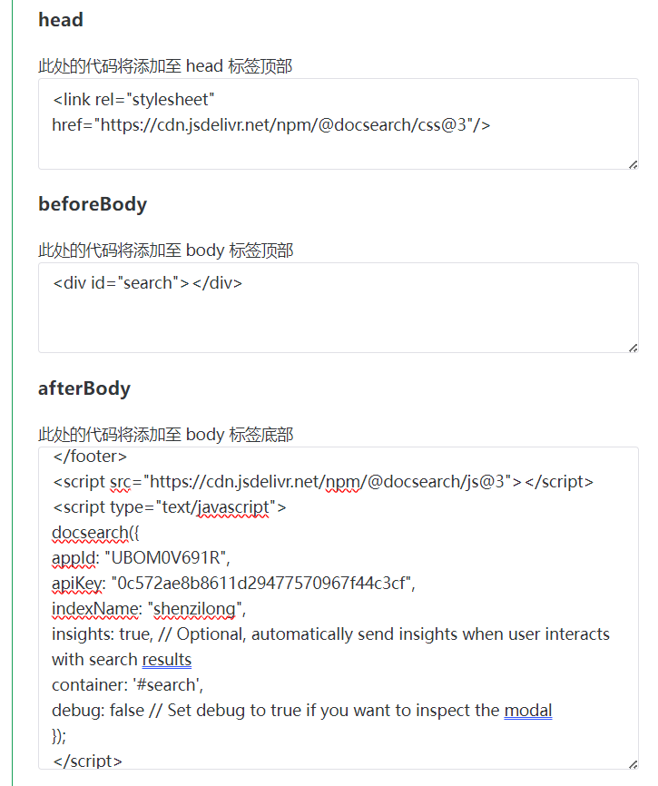
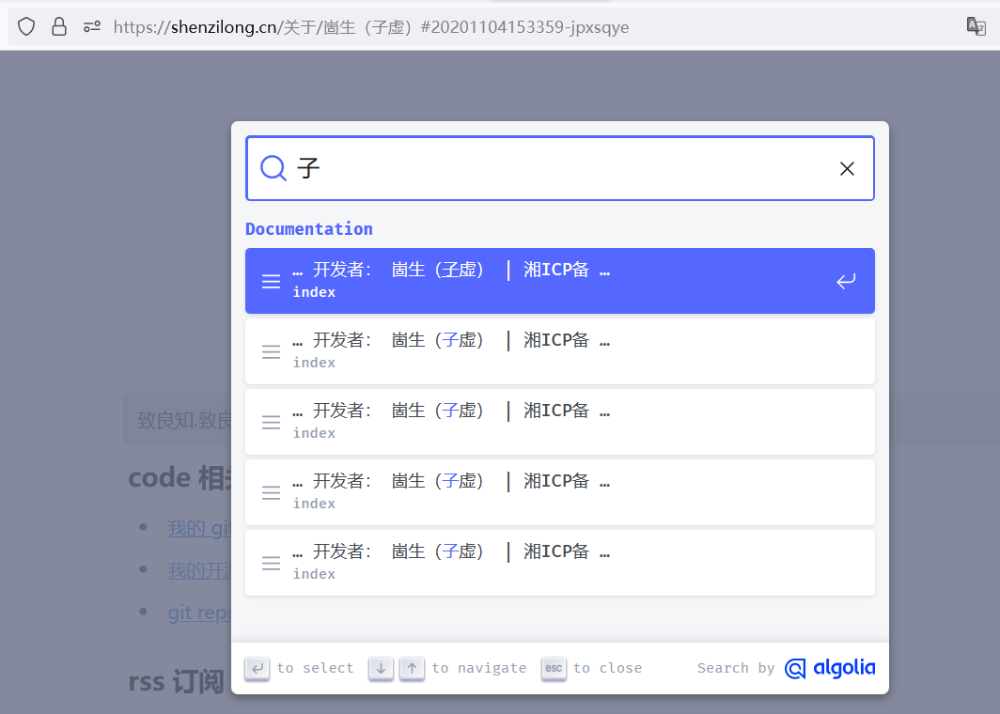

为OceanPress生成的网站添加搜索功能
目前（2023年10月5日）OceanPress还没有支持搜索功能的打算
但是，对于静态的文档网站早已有了通用的解决方案
这里我使用 Algolia 进行文档搜索
Algolia 可以说是这方面的老大了，vue.js 官网使用的就是他。
他的 DocSearch 可以免费申请
当申请通过之后Algolia会发送一条邮件过来，其中包含如下代码
bash
CSS
Copy this snippet at the end of the HTML tag
JavaScript
Copy this snippet at the end of the HTML tag
将他添加到OceanPress的配置中（你应该复制通过邮件发给你的，而不是上面的代码）

注意：还需要添加一个div用来存放搜索框，以及修改aferBody中的 container 配置指向该div

待办 我的网站的搜索结果显然还有一些问题，但 DocSearch 是一周才会爬取一次，并且之前没有添加 sitemap ，等添加后再看是否成功吧